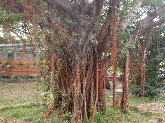

榕樹
學名：Ficus microcarpa Linn. f. var. microcarpa
科名：桑科
別名：正榕、烏松、榕、老公鬚
原產地：日本、琉球、中國大陸、印度、菲律賓、臺灣
特徵：
常綠喬木，多氣根，下垂的氣生根，接觸地面後便形成根，葉互生，革質，為倒卵形或橢圓形，為深綠色，托葉披針形，隱花果腋生，扁卵形，成熟時為紫色或紅褐色，表面帶有白點。
用途：
為造景樹種，可種植為庭園樹、行道樹，供觀賞及乘涼，木材可做器具、農具、薪炭，乳汁可製橡膠。